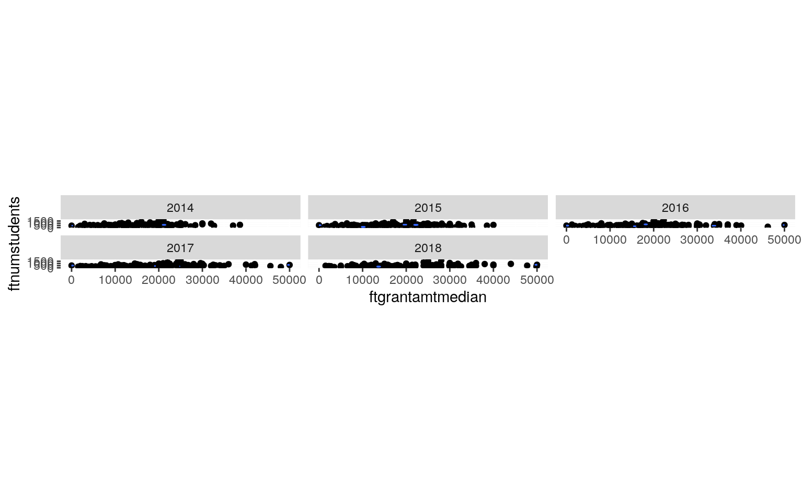
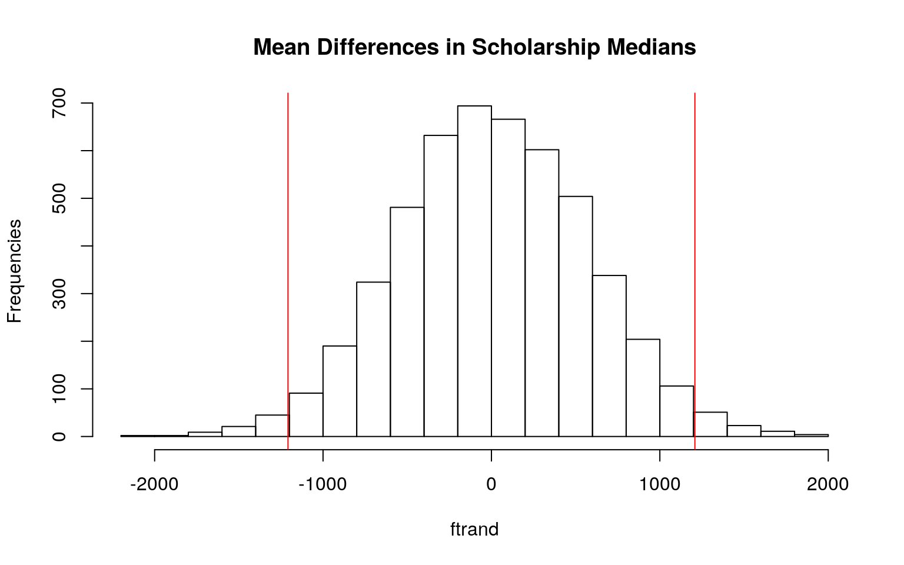
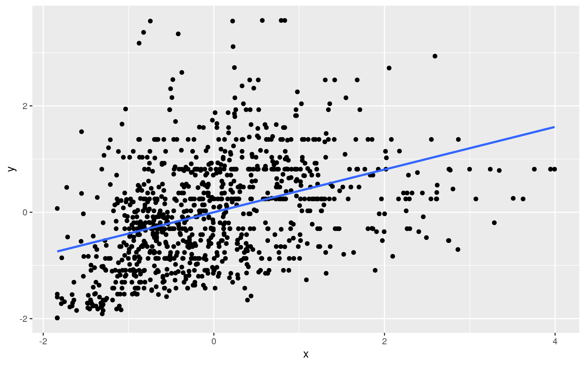
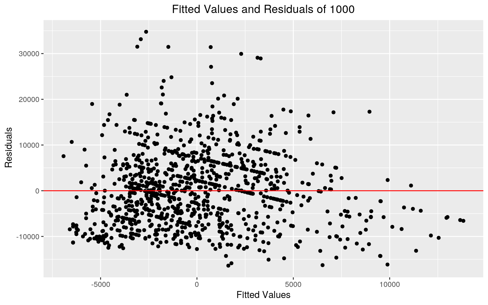
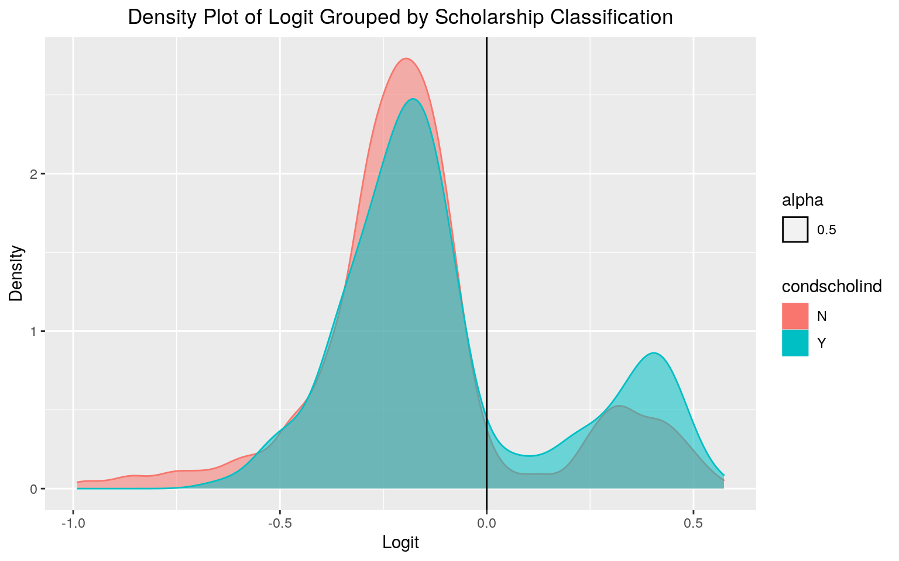
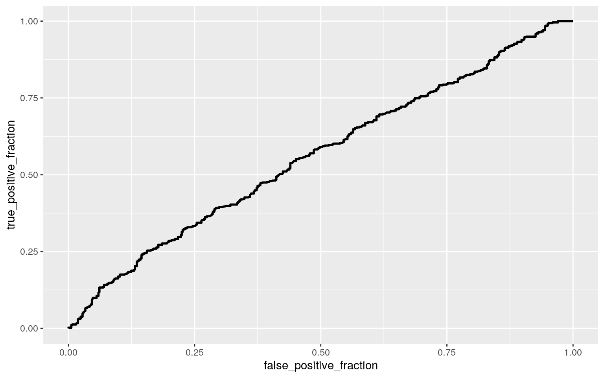

FinancialAid <- read.csv("FinancialAid.csv")
library(dplyr)
library(ggplot2)
library(lmtest)
library(sandwich)
library(tidyverse)FinAid <- FinancialAid %>% mutate(cond = ifelse(condscholind ==
"Y", 1, 0)) %>% select(cond, schoolname, academicyear, condscholind,
ftnumstudents, numstudents, ftrecvgrant, totalrecvgrant,
totalrecvgrantp, ftgrantamtmedian, ftgrantamt75, ftgrantamt25) %>%
na.omit()
FinAid$year <- factor(FinAid$academicyear, labels = c("2014",
"2015", "2016", "2017", "2018"))The dataset “FinancialAid” was pulled from AccessLex Institute which compiled datasets from law schools and their annual financial aid that is reported to the American Bar Association (ABA). I have selected the law school names, academic year, number of students, number of full-time students receving grants, total grants received, total grant percentage, and the 25th percentile, median, and 75th percentile in grant amounts for full time students. The binomial variable is 1 if the law school requires conditional scholarships and 0 if they do not require conditional scholarships. There are a total of 1013 observations gathered from law schools between 2014-2018. I am interested in this data as I have been accepted into UT Law for the coming school year and would like to see how other schools distribute scholarship amounts.
library(rstatix)
# Assumtions
FA_sample <- FinAid %>% sample_n(1000)
group <- FA_sample$year
DV <- FA_sample %>% select(ftnumstudents, ftgrantamtmedian)
sapply(split(DV, group), mshapiro_test) #test of multivariate normality## 2014 2015 2016 2017 2018
## statistic 0.8771832 0.871016 0.8509833 0.8637913 0.8656377
## p.value 1.199252e-11 5.090997e-12 5.23305e-13 1.649345e-12 2.866861e-12box_m(DV, group) #test of homogeneity of covariance## # A tibble: 1 x 4
## statistic p.value parameter method
## <dbl> <dbl> <dbl> <chr>
## 1 25.1 0.0142 12 Box's M-test for Homogeneity of Covariance Matric…ggplot(FinAid, aes(x = ftgrantamtmedian, y = ftnumstudents)) +
geom_point(alpha = 1) + geom_density_2d(h = 20) + coord_fixed() +
facet_wrap(~year) When testing for normality within each group, all academic years had a p-value less than 0.05. This indicates that the MANOVA multivariate normality assumption is not satisfied.
Ho:For ftnumstudents and ftgrantamtmedian, means for all years are equal. Ha: For at least one variable, one year mean is different.
# MANOVA
FNmanova <- manova(cbind(ftnumstudents, ftgrantamtmedian) ~ year,
data = FinAid)
summary(FNmanova) #significant## Df Pillai approx F num Df den Df Pr(>F)
## year 4 0.048056 6.2041 8 2016 6.072e-08 ***
## Residuals 1008
## ---
## Signif. codes: 0 '***' 0.001 '**' 0.01 '*' 0.05 '.' 0.1 ' ' 1summary.aov(FNmanova)## Response ftnumstudents :
## Df Sum Sq Mean Sq F value Pr(>F)
## year 4 113079 28270 0.4101 0.8014
## Residuals 1008 69479964 68929
##
## Response ftgrantamtmedian :
## Df Sum Sq Mean Sq F value Pr(>F)
## year 4 3.4988e+09 874693935 11.394 4.767e-09 ***
## Residuals 1008 7.7380e+10 76765524
## ---
## Signif. codes: 0 '***' 0.001 '**' 0.01 '*' 0.05 '.' 0.1 ' ' 1pairwise.t.test(FinAid$ftgrantamtmedian, FinAid$year, p.adj = "none")##
## Pairwise comparisons using t tests with pooled SD
##
## data: FinAid$ftgrantamtmedian and FinAid$year
##
## 2014 2015 2016 2017
## 2015 0.08225 - - -
## 2016 0.00078 0.10115 - -
## 2017 2.4e-06 0.00259 0.16930 -
## 2018 2.4e-09 1.8e-05 0.00777 0.19495
##
## P value adjustment method: none# 1 manova, 1 anova, 10 t.tests = 12 total Probability of at
# least one Type I error:
1 - (0.95)^12## [1] 0.45963990.05/12 #Bonferroni correction ## [1] 0.004166667A one-way MANOVA was conducted to determine the effect of ftnumstudents and ftgrantamtmedian across academic years. This yeilded a p-value significantly less than 0.05 indicating that at least one of teh variables’ mean differs for at least one academic year. The univariate ANOVA indicated that only ftgrantamtmedian had a significant p-value less than 0.05.
Pairwise t-tests were then conducted, leading to 12 tests in total. This caused the probability of at least one Type I error to be 0.4596, making the bonferroni adjusted significance level 0.0042. Using this new significance level, one comparison (2016 & 2018) that was significant before is no longer so.
set.seed(348)
FinAid %>% group_by(cond) %>% summarize(ftamtmeans = mean(ftgrantamtmedian)) %>%
summarize(mean_diff = diff(ftamtmeans))## # A tibble: 1 x 1
## mean_diff
## <dbl>
## 1 -1218.# Mean Difference
ftrand <- vector()
for (i in 1:5000) {
new <- data.frame(ftgrantamtmedian = sample(FinAid$ftgrantamtmedian),
Condition = FinAid$cond)
ftrand[i] <- mean(new[new$Condition == "1", ]$ftgrantamtmedian) -
mean(new[new$Condition == "0", ]$ftgrantamtmedian)
}
mean(ftrand < -1218.041 | ftrand > 1218.041)## [1] 0.0312H0:Mean difference ftgrantamtmedian is 0 for schools with conditinal scholarships and schools with non-conditional scholarships.
HA:Mean ftgrantamtmedian is different for schools with conditinal scholarships and schools with non-conditional scholarships.
The mean difference test confirmed with its p-value of 0.0306 that we should reject the null hypothesis in favor of the alternate hypothesis that the median amount that schools with conditional and schools with non-conditional scholarships are offering are different.
{
hist(ftrand, main = "Mean Differences in Scholarship Medians",
ylab = "Frequencies")
abline(v = c(-1208.041, 1208.041), col = "red")
}
library(glmnet)
FinAid$ftrec_c <- FinAid$ftrecvgrant - mean(FinAid$ftrecvgrant)
FinAid$ftmed_c <- FinAid$ftgrantamtmedian - mean(FinAid$ftgrantamtmedian)
FNfit <- lm(ftmed_c ~ ftrec_c * cond, data = FinAid)
summary(FNfit)##
## Call:
## lm(formula = ftmed_c ~ ftrec_c * cond, data = FinAid)
##
## Residuals:
## Min 1Q Median 3Q Max
## -16348 -6379 -480 4988 34770
##
## Coefficients:
## Estimate Std. Error t value Pr(>|t|)
## (Intercept) -29.853 357.542 -0.083 0.933
## ftrec_c 18.444 1.716 10.746 <2e-16 ***
## cond 117.855 526.381 0.224 0.823
## ftrec_c:cond 1.462 2.893 0.505 0.613
## ---
## Signif. codes: 0 '***' 0.001 '**' 0.01 '*' 0.05 '.' 0.1 ' ' 1
##
## Residual standard error: 8199 on 1009 degrees of freedom
## Multiple R-squared: 0.1613, Adjusted R-squared: 0.1588
## F-statistic: 64.7 on 3 and 1009 DF, p-value: < 2.2e-16The predicted median amount for a non-conditional scholarship with an average number of students receiving aid is -29.853. When controlling for condition, every one unit increase in students receiving aid, there is a 18.444 increase in median scholarship amount. Schools with conditional scholarships with averge numbers of students receiving aid have predicted median aid amounts 117.855 greater than schools with non-conditional scholarships with average amounts of students receiving aid. The slope of students receiving aid on median aid amounts is 1.462 greater for conditional scholarships than non-conditional scholarships.
# Proportion
summary(FNfit)##
## Call:
## lm(formula = ftmed_c ~ ftrec_c * cond, data = FinAid)
##
## Residuals:
## Min 1Q Median 3Q Max
## -16348 -6379 -480 4988 34770
##
## Coefficients:
## Estimate Std. Error t value Pr(>|t|)
## (Intercept) -29.853 357.542 -0.083 0.933
## ftrec_c 18.444 1.716 10.746 <2e-16 ***
## cond 117.855 526.381 0.224 0.823
## ftrec_c:cond 1.462 2.893 0.505 0.613
## ---
## Signif. codes: 0 '***' 0.001 '**' 0.01 '*' 0.05 '.' 0.1 ' ' 1
##
## Residual standard error: 8199 on 1009 degrees of freedom
## Multiple R-squared: 0.1613, Adjusted R-squared: 0.1588
## F-statistic: 64.7 on 3 and 1009 DF, p-value: < 2.2e-16# Regression Plot
x <- scale(FinAid$ftrec_c)
y <- scale(FinAid$ftmed_c)
ggplot(data.frame(x, y), aes(x, y)) + geom_point() + geom_smooth(method = "lm",
se = F)
# Assumptions Linearity
FN_samp2 <- FinAid %>% sample_n(1000)
FNresids2 <- lm(ftmed_c ~ ftrec_c * cond, data = FN_samp2)$residuals
FNfitted2 <- lm(ftmed_c ~ ftrec_c * cond, data = FN_samp2)$fitted.values
ggplot() + geom_point(aes(FNfitted2, FNresids2)) + geom_hline(yintercept = 0,
color = "red") + labs(title = "Fitted Values and Residuals of 1000",
x = "Fitted Values", y = " Residuals") + theme(plot.title = element_text(hjust = 0.5))
# Formal Test of Normality Ho:true distribution is normal.
FNresids <- FNfit$residuals
ks.test(FNresids, "pnorm", mean = 0, sd(FNresids)) #pvalue=0.0272 ##
## One-sample Kolmogorov-Smirnov test
##
## data: FNresids
## D = 0.046058, p-value = 0.0272
## alternative hypothesis: two-sided# Homoskedasticity
bptest(FNfit) #pvalue=0.5575 ##
## studentized Breusch-Pagan test
##
## data: FNfit
## BP = 2.0726, df = 3, p-value = 0.5575The linear plot does not look as though it satisfies the normality assumption as the points flare out and the residuals are increasingly positive. The multiple R-squared value indicates that 0.1613 of variation in ftmed_c is explained by the overall model.
The Kolmogorov-Smirnov test calculated a p-value of 0.0272 indicating that the null hypothesis of normal distribution must be rejected. The Breusch-Pagan test for homoskedasticity returned a p-value of 0.5575 showing that the data has equal variances.
# uncorrected
summary(FNfit)$coef[, 1:2]## Estimate Std. Error
## (Intercept) -29.853034 357.541753
## ftrec_c 18.444322 1.716320
## cond 117.854749 526.381077
## ftrec_c:cond 1.461788 2.893053# corrected SE
coeftest(FNfit, vcov = vcovHC(FNfit))[, 1:2]## Estimate Std. Error
## (Intercept) -29.853034 361.764425
## ftrec_c 18.444322 1.800147
## cond 117.854749 535.603483
## ftrec_c:cond 1.461788 2.953199After correcting for robust standard errors, the coefficients remained the same but each of the standard errors increased.
bootdat <- sample_frac(FinAid, replace = T)
samp_dist <- replicate(5000, {
bootdat <- sample_frac(FinAid, replace = T)
fita <- lm(ftmed_c ~ ftrec_c * cond, data = bootdat)
coef(fita)
})
samp_dist %>% t %>% as.data.frame %>% summarize_all(sd)## (Intercept) ftrec_c cond ftrec_c:cond
## 1 362.2446 1.793315 538.9477 2.966568In this model, the intercept is lower than both uncorrected and corrected coeftests. The standard errors for ftrec_c is between the two previous values and the SEs for and ftrec:cond interaction and condition are greater than both previous values.
LR <- glm(cond ~ year + numstudents, data = FinAid, family = "binomial")
FinAid$year <- factor(FinAid$academicyear, labels = c("2014",
"2015", "2016", "2017", "2018"))
summary(LR)##
## Call:
## glm(formula = cond ~ year + numstudents, family = "binomial",
## data = FinAid)
##
## Deviance Residuals:
## Min 1Q Median 3Q Max
## -1.4215 -1.0999 -0.9769 1.2428 1.4638
##
## Coefficients:
## Estimate Std. Error z value Pr(>|z|)
## (Intercept) 0.6065368 0.1930752 3.141 0.00168 **
## year2015 -0.5216556 0.2006931 -2.599 0.00934 **
## year2016 -0.5698469 0.2015225 -2.828 0.00469 **
## year2017 -0.6073097 0.2017176 -3.011 0.00261 **
## year2018 -0.6158473 0.2024510 -3.042 0.00235 **
## numstudents -0.0004883 0.0002201 -2.218 0.02654 *
## ---
## Signif. codes: 0 '***' 0.001 '**' 0.01 '*' 0.05 '.' 0.1 ' ' 1
##
## (Dispersion parameter for binomial family taken to be 1)
##
## Null deviance: 1400.1 on 1012 degrees of freedom
## Residual deviance: 1382.3 on 1007 degrees of freedom
## AIC: 1394.3
##
## Number of Fisher Scoring iterations: 4exp(coef(LR))## (Intercept) year2015 year2016 year2017 year2018 numstudents
## 1.8340687 0.5935371 0.5656120 0.5448146 0.5401830 0.9995118table(FinAid$cond, FinAid$year)##
## 2014 2015 2016 2017 2018
## 0 85 112 113 115 114
## 1 117 93 90 88 86The odds of an 2014 applicant getting a non-conditional scholarship with 0 other applicants to consider is 1.8341. Controlling for the number of students, the odds of a 2015 applicant receiving a conditional scholarship was 0.5935 times the admission for a 2014 applicant. Controlling for number of academic year, every one unit in number of students increases odds of a conditional scholarship by 0.9995.
FNprob <- predict(LR, type = "response")
FNpred <- ifelse(FNprob > 0.5, 1, 0)
table(prediction = FNpred, truth = FinAid$condscholind) %>% addmargins## truth
## prediction N Y Sum
## 0 0 456 357 813
## 1 0 83 117 200
## Sum 0 539 474 1013class_diag(FNprob, FinAid$cond)## acc sens spec ppv auc
## 1 0.5656466 0.2468354 0.8460111 0.585 0.5618136FinAid$logit <- predict(LR, type = "link")
FinAid %>% ggplot() + geom_density(aes(logit, color = condscholind,
fill = condscholind, alpha = 0.5)) + geom_vline(xintercept = 0) +
labs(title = "Density Plot of Logit Grouped by Scholarship Classification",
x = "Logit", y = "Density") + theme(plot.title = element_text(hjust = 0.5))
# ROC curve
library(plotROC)
FNROC <- ggplot(FinAid) + geom_roc(aes(d = cond, m = FNprob),
n.cuts = 0)
FNROC
calc_auc(FNROC)## PANEL group AUC
## 1 1 -1 0.5618136The AUC value of 0.5618 indicates that year and number of students are bad indicators of scholarship classification.
FinAid2 <- FinAid %>% select(-logit, -schoolname, -academicyear,
-ftgrantamt25, -ftgrantamt75, -condscholind, -ftmed_c, -ftrec_c)
FNfit2 <- glm(cond ~ (.), data = FinAid2, family = "binomial")
FNprob2 <- predict(FNfit2, type = "response")
class_diag(FNprob2, FinAid2$cond)## acc sens spec ppv auc
## 1 0.6130306 0.4767932 0.7328386 0.6108108 0.6785499For this logistic regression model using all variables and their interactions, the AUC of 0.6785 shows that this model is poor at predicting scholarship status.
The accuracy of correctly classified scholarships is 0.6130, its sensitivity to correctly classified conditional scholarships is 0.4768, its specificity to correctly classified non-conditional scholarships is 0.7328, and its PPV of scholarships classified as conditional actually conditional is 0.6108.
# 10-fold CV
k = 10
FinAid2data <- FinAid2[sample(nrow(FinAid2)), ]
folds <- cut(seq(1:nrow(FinAid2)), breaks = k, labels = F)
diags <- NULL
for (i in 1:k) {
train <- FinAid2data[folds != i, ]
test <- FinAid2data[folds == i, ]
truth <- test$cond
fit <- glm(cond ~ (.)^2, data = train, family = "binomial")
probs <- predict(fit, newdata = test, type = "response")
diags <- rbind(diags, class_diag(probs, truth))
}
summarize_all(diags, mean)## acc sens spec ppv auc
## 1 0.6533683 0.6295019 0.6727117 0.6295586 0.7234872For the 10-fold CV of the same logistic regression model, the AUC increases slightly to 0.7271 which makes it a fair predictor of scholarships status. Accuracy, sensitivity, and PPV have also increased, but specificity has decreased.
# LASSO
y <- as.matrix(FinAid2$cond)
x <- model.matrix(cond ~ ., data = FinAid2)[, -1]
x <- scale(x)
cv <- cv.glmnet(x, y, family = "binomial")
Lasso <- glmnet(x, y, family = "binomial", lambda = cv$lambda.1se)
coef(Lasso)## 11 x 1 sparse Matrix of class "dgCMatrix"
## s0
## (Intercept) -0.1298534
## ftnumstudents .
## numstudents .
## ftrecvgrant -0.1440023
## totalrecvgrant .
## totalrecvgrantp -0.1387188
## ftgrantamtmedian .
## year2015 .
## year2016 .
## year2017 .
## year2018 .The LASSO showed that the ftnumstudents, ftrecvgrant, and totalrecvgrantp were predictive of scholarship status.
set.seed(348)
k = 10
FinAid3data <- FinAid2[sample(nrow(FinAid2)), ]
folds <- cut(seq(1:nrow(FinAid2)), breaks = k, labels = F)
diags <- NULL
for (i in 1:k) {
train <- FinAid3data[folds != i, ]
test <- FinAid3data[folds == i, ]
truth <- test$cond
FinAid3fit <- glm(cond ~ ftnumstudents + ftrecvgrant + totalrecvgrantp,
data = train, family = binomial)
probs3 <- predict(FinAid3fit, newdata = test, type = "response")
diags <- rbind(diags, class_diag(probs3, truth))
}
summarize_all(diags, mean)## acc sens spec ppv auc
## 1 0.6002233 0.4433786 0.7438282 0.605515 0.6659992The performance of this test was worse and returned the AUC back down to a poor predictor with a value of 0.6660.
Note that the echo = FALSE parameter was added to the code chunk to prevent printing of the R code that generated the plot.